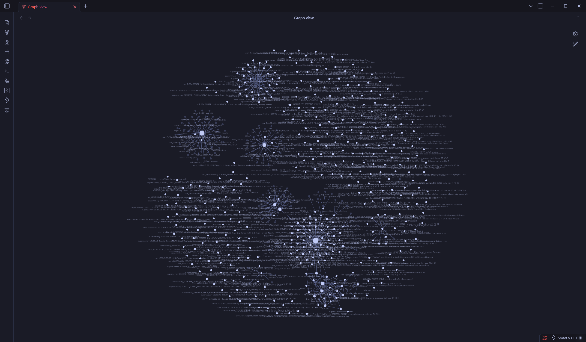

Every conversation session archived as clean Markdown, automatically secret-scrubbed, tracked for token telemetry, and staged for human review. No black boxes. No vendor lock-in. Native Obsidian power with built-in MCP server support.

How volatile agent conversations transform into durable, human-verified knowledge without hallucinating or leaking secrets.
Organized for discoverability, speed, and effortless agent context ingestion. Explore the directory hierarchy below.
Contains active initiatives with concrete deadlines and deliverables. Includes Architectural Decision Records (ADR) with 4-agent peer review personas (Argus for security, Codex for code, Ledger for token efficiency, Vox for human alignment).
Compare architectural trade-offs between human-curated local vaults, raw chat logs, and opaque vector memory APIs.
| Evaluation Criterion | Hermes Brain Template | Raw Chat Logs | Vector-DB (Mem0 / Pinecone) | Generic Obsidian Vault |
|---|---|---|---|---|
| Human Review Before Memory | ✓ Staged in Kanban (Zero auto-pollute) | ✗ No review (unstructured) | ✗ Auto-embedded, opaque black box | — No agent pipeline |
| Plain Markdown Transparency | ✓ 100% standard .md files | ✓ Raw JSON/text | ✗ Requires vendor API/portal | ✓ Standard .md |
| Portability & Git Versioning | ✓ Fully local, your private git repo | ✓ Local files | ✗ Locked into SaaS service | ✓ Git portable |
| Token Telemetry & Auditing | ✓ Built-in Dataview & Token log | ✗ None | △ Varies / proprietary billing | ✗ None |
| Model Context Protocol (MCP) | ✓ Native MCP server (JSON-RPC) | ✗ None | △ Custom API wrapper | ✗ Requires custom bridge |
| Agent-Ready Setup Effort | ✓ 1-paste chat prompt or 1-liner | ✓ Default stdout | ✗ Complex API key & SDK setup | ✗ Manual folder creation |
hermes_brain_mcp.py)Expose your Obsidian second brain directly to Claude Desktop, Cursor, OpenClaw, and any MCP-compatible client over stdio.
Click any tool below to test the simulated stdio JSON-RPC request and see the real-time response payload:
"hermes-brain": {
"command": "python",
"args": ["<vault_path>/_System/Scripts/hermes_brain_mcp.py"]
}
More than just folders — an entire cross-platform automation and cognitive framework.
Session archivers scan for API keys, passwords, bearer tokens, SSH private keys, and connection strings, replacing them with [REDACTED] before any text touches disk.
Tracks prompt and completion tokens per chat session. Automatically aggregates daily totals into Token-Usage.log and visualizes them on your Obsidian Dashboard.
Run dream_cycle.py to consolidate cross-session themes, distill learnings, and update Maps of Content (MOCs) while you sleep, using local Ollama or Python embeddings.
Architecture Decision Records with built-in multi-agent review personas: Argus (Security), Codex (Code), Ledger (Token efficiency), and Vox (Alignment).
Index notes and chat transcripts into a local semantic vector store powered by sentence-transformers or Ollama embeddings. Zero cloud queries required.
An 11-dimension cognitive framework to analyze communication patterns, detect tone anomalies, and keep multi-agent squads aligned with your style.
Choose the setup option that fits your workflow — from a 1-paste chat prompt to an interactive terminal script.
Downloads the latest template, asks where you want your vault, checks for Obsidian, and registers HERMES_VAULT_PATH.
irm https://raw.githubusercontent.com/mistrysiddh/hermes-brain-template/main/_System/Scripts/Installers/install.ps1 | iex
curl -fsSL https://raw.githubusercontent.com/mistrysiddh/hermes-brain-template/main/_System/Scripts/Installers/install.sh | bash
Hermes will clone the repo, run the installer, configure the environment, and wire up the hourly archiving cron job automatically.
Clone https://github.com/mistrysiddh/hermes-brain-template into a new "Hermes Brain" vault for me. Steps: 1. Ask me where I want the vault folder to live (default: ~/Hermes Brain on Linux/macOS, or %USERPROFILE%\Hermes Brain on Windows). 2. Clone the repo into that location. 3. Run the platform-appropriate installer (_System/Scripts/Installers/install.sh or install.ps1). 4. Relay any questions to me and confirm env.HERMES_VAULT_PATH is set. 5. Create an hourly session-archiving cron job named "hermes-brain-archive-hourly" pointing to <vault>/_System/Scripts/hourly_archive.py.
Use GitHub's green "Use this template" button to fork the repository privately into your GitHub account, then clone it locally:
git clone https://github.com/mistrysiddh/hermes-brain-template.git "Hermes Brain" cd "Hermes Brain" # Windows: powershell -ExecutionPolicy Bypass -File .\_System\Scripts\Installers\install.ps1 # Linux/macOS: chmod +x _System/Scripts/Installers/install.sh && ./_System/Scripts/Installers/install.sh
Creates a temporary copy in %TEMP% or /tmp without touching your real Hermes config or permanent directories:
# Linux / macOS: ./_System/Scripts/Installers/try.sh # Windows (PowerShell): powershell -ExecutionPolicy Bypass -File .\_System\Scripts\Installers\try.ps1
Spin up a fully configured Linux container in your browser with zero local installs:
Launch Codespaces Sandbox04-Archives/Daily/, candidate reviews in 04-Archives/Memory-Review/, and plugin configs are strictly git-ignored so you never accidentally commit personal data.
./_System/Scripts/Installers/update.sh (or update.ps1 on Windows). It pulls the latest scripts, templates, and bug fixes without touching your existing personal notes, daily logs, or user profiles.